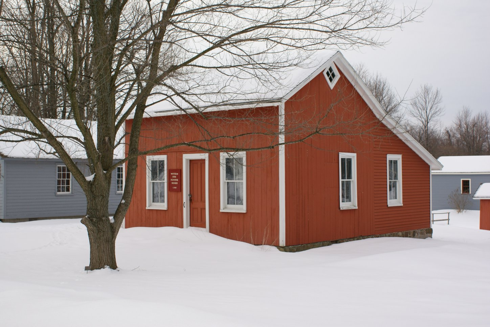

Ore Miner House

This tiny one-and-a-half story clapboard-style saltbox-style structure with its barn red paint and crooked window has charmed many casual travelers as they drive along Ontario Center Road. On the main floor, there is a living room and a bedroom. The loft is reached by a center staircase and is used for storage. The kitchen and another bedroom were in the shed to the rear of the main part of the house.
James and Nancy Watson had three children. James and his son, Lynn (born in 1877) both worked in the iron ore mines, and Jim worked for the Furnaceville Iron Company in 1889. They rode their bicycles to work each day. Jim operated the derrick and Lynn worked the steam shovel and later the electric shovel. Lynn's miner's identification coins hang on the wall in the living room. Until his death in 1964, Lynn also worked as a janitor at the Brick Church. In 1977, this home was donated to the Historical Society by Earl and Bernice Watson.
Building Must-See: New Butter Churn
| The Heritage Square Museum is owned and operated by The Town of Ontario Historical and Landmark Preservation Society. Copyright 2023 |